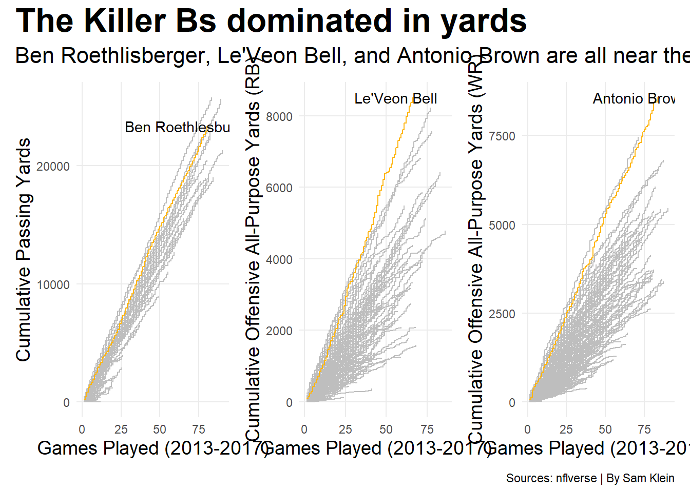

Code
library(tidyverse)Warning: package 'tidyverse' was built under R version 4.3.3Warning: package 'ggplot2' was built under R version 4.3.3Warning: package 'tidyr' was built under R version 4.3.3Warning: package 'readr' was built under R version 4.3.3Warning: package 'purrr' was built under R version 4.3.3Warning: package 'dplyr' was built under R version 4.3.3Warning: package 'forcats' was built under R version 4.3.3Warning: package 'lubridate' was built under R version 4.3.3── Attaching core tidyverse packages ──────────────────────── tidyverse 2.0.0 ──
✔ dplyr 1.1.4 ✔ readr 2.1.5
✔ forcats 1.0.0 ✔ stringr 1.5.1
✔ ggplot2 3.5.1 ✔ tibble 3.2.1
✔ lubridate 1.9.4 ✔ tidyr 1.3.1
✔ purrr 1.0.2
── Conflicts ────────────────────────────────────────── tidyverse_conflicts() ──
✖ dplyr::filter() masks stats::filter()
✖ dplyr::lag() masks stats::lag()
ℹ Use the conflicted package (<http://conflicted.r-lib.org/>) to force all conflicts to become errorsCode
library(nflverse)Warning: package 'nflverse' was built under R version 4.3.3── Attaching packages ──────────────────────────────────────── nflverse 1.0.3 ──
✔ nflfastR 5.0.0 ✔ nflreadr 1.4.1
✔ nflseedR 1.2.0 ✔ nflplotR 1.4.0
✔ nfl4th 1.0.4 Warning: package 'nflfastR' was built under R version 4.3.3Warning: package 'nflseedR' was built under R version 4.3.3Warning: package 'nfl4th' was built under R version 4.3.3Warning: package 'nflreadr' was built under R version 4.3.3Warning: package 'nflplotR' was built under R version 4.3.3──────────────────────────────────────────────────────────────── Ready to go! ──Code
library(nflfastR)
library(patchwork)Warning: package 'patchwork' was built under R version 4.3.3Code
nfl_player_box <- load_player_stats(seasons = 1999:2024, stat_type = "offense")
years <- c(2013:2017)
trio <- c("QB", "RB", "WR")
nfl_trio <- nfl_player_box |>
filter(position %in% trio, season %in% years) |>
group_by(player_display_name) |>
mutate(weeks_per_season = max(week),
game = row_number()) |>
ungroup()
nfl_qb <- nfl_trio |>
group_by(player_display_name) |>
select(player_display_name, position, recent_team, season, week, passing_yards, game) |>
mutate(cum_passing = cumsum(passing_yards)) |>
filter(position == "QB")
big_ben <- nfl_qb |>
filter(player_display_name == "Ben Roethlisberger")
big_ben <- ggplot() +
geom_step(
data = nfl_qb,
aes(x = game, y = cum_passing, group = player_display_name),
color = "grey"
) +
geom_step(
data = big_ben,
aes(x = game, y = cum_passing, group = player_display_name),
color = "#FFB612"
) +
annotate(
"text",
x = max(big_ben$game) - 10,
y = max(big_ben$cum_passing),
label = "Ben Roethlesburger"
) +
labs(
x = "Games Played (2013-2017)",
y = "Cumulative Passing Yards"
) +
theme_minimal() +
theme(
plot.title = element_text(
size = 16, face = "bold"
),
plot.subtitle = element_text(size = 10),
axis.title = element_text(size = 8),
panel.grid.minor = element_blank()
)
nfl_rb <- nfl_trio |>
group_by(player_display_name) |>
select(player_display_name, position, recent_team, season, week,
rushing_yards, receiving_yards, game) |>
mutate(all_purpose = rushing_yards + receiving_yards,
cum_all_purpose = cumsum(all_purpose)) |>
filter(position == "RB")
bell <- nfl_rb |>
filter(player_display_name == "Le'Veon Bell")
bell <- ggplot() +
geom_step(
data = nfl_rb,
aes(x = game, y = cum_all_purpose, group = player_display_name),
color = "grey"
) +
geom_step(
data = bell,
aes(x = game, y = cum_all_purpose, group = player_display_name),
color = "#FFB612"
) +
annotate(
"text",
x = max(bell$game) - 10,
y = max(bell$cum_all_purpose),
label = "Le'Veon Bell"
) +
labs(
x = "Games Played (2013-2017)",
y = "Cumulative Offensive All-Purpose Yards (RB)"
) +
theme_minimal() +
theme(
plot.title = element_text(
size = 16, face = "bold"
),
plot.subtitle = element_text(size = 10),
axis.title = element_text(size = 8),
panel.grid.minor = element_blank()
)
nfl_wr <- nfl_trio |>
group_by(player_display_name) |>
select(player_display_name, position, recent_team, season, week,
rushing_yards, receiving_yards, game) |>
mutate(all_purpose = rushing_yards + receiving_yards,
cum_all_purpose = cumsum(all_purpose)) |>
filter(position == "WR")
ab <- nfl_wr |>
filter(player_display_name == "Antonio Brown")
ab <- ggplot() +
geom_step(
data = nfl_wr,
aes(x = game, y = cum_all_purpose, group = player_display_name),
color = "grey"
) +
geom_step(
data = ab,
aes(x = game, y = cum_all_purpose, group = player_display_name),
color = "#FFB612"
) +
annotate(
"text",
x = max(ab$game) - 10,
y = max(ab$cum_all_purpose),
label = "Antonio Brown"
) +
labs(
x = "Games Played (2013-2017)",
y = "Cumulative Offensive All-Purpose Yards (WR)"
) +
theme_minimal() +
theme(
plot.title = element_text(
size = 16, face = "bold"
),
plot.subtitle = element_text(size = 10),
axis.title = element_text(size = 8),
panel.grid.minor = element_blank()
)
(big_ben + bell + ab) +
plot_annotation(
title = "The Killer Bs dominated in yards",
subtitle = "Ben Roethlisberger, Le'Veon Bell, and Antonio Brown are all near the top in yardage for their respective positions from 2013-2017",
caption = "Sources: nflverse | By Sam Klein"
) &
theme(
plot.title = element_text(size = 24, face = "bold"),
axis.title = element_text(size = 14),
plot.subtitle = element_text(size = 16),
panel.grid.minor = element_blank()
)